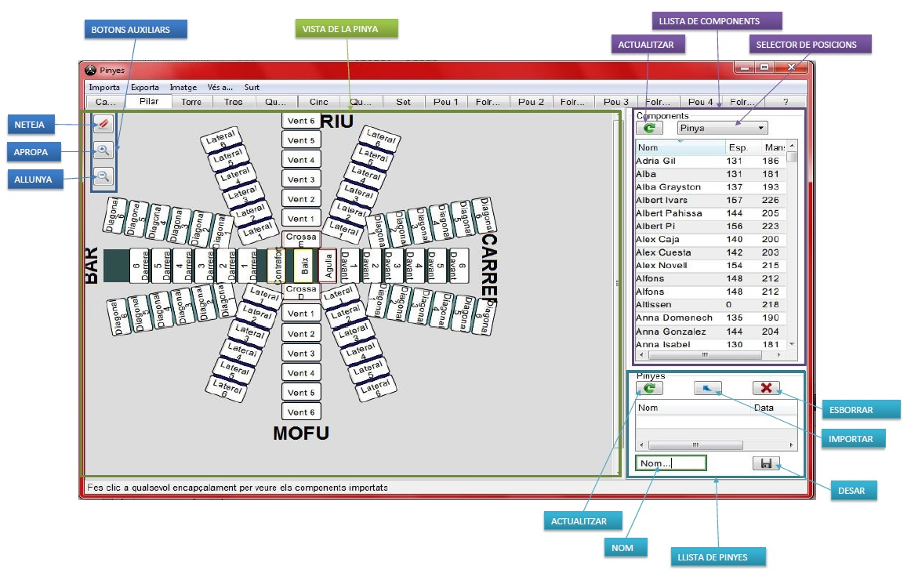

Per tal de fer més fàcil la introducció de nous components a la base de dades, existeix la possibilitat de fer la llista en un editor extern a aquest programari i després importar aquesta llista. El format de la llista ha de coincidir amb els camps de la base de dades per a una correcta importació. El format del fitxer ha de ser:
Posició,Nom,Alçada mans,Alçada espatlla,Present o no a l'assaig
Posició:
Les possibles posicions són:
"Pinya" -- Totes les posicions de la pinya que no siguin les següentsNom:
NO posar ni punts ni comes per a una correcta importació. Els accents i els caràcters "extranys" podrien provocar algun problema
Alçada mans:
L'alçada total del casteller amb les mans aixecades (en centímetres). De 0 a 300 cm.
Alçada espatlla:
L'alçada del casteller des dels peus fins a les espatlles (Per a fer peus de folres) (en centímetres). De 0 a 300 cm.
Present o no a l'assaig o actuació:
0 si no és present, 1 si hi és.
Notes:
Exemple de fitxer:
Pinya,Nom 1,186,131,0
Pinya,Nom 2,181,131,1
Crosses,Nom 3,181,131,0
Pinya,Nom 4,193,137,0
Agulles,Nom 5,193,137,0
Pinya,Nom 6,226,157,0
Primeres,Nom 7,226,157,0
Pinya,Nom 8,205,144,0
Contraforts,Nom 1,186,131,0
Baixos,Nom 2,181,131,1
Això es pot fer editant un fitxer de text amb algun programari senzill com la Llibreta de Windos o similar i guardant en format txt.
Una manera má intuitiva pot ser amb algun tipus de software de fulls de calcul tipus Excel i guardar en format CSV, exemple:
Tenim la fulla formatada així:
El programari és capaç d'importar pinyes fetes amb el mateix programari i traspassar-les a un altre dispositiu o guardar-les per a una altra ocasió.
El procés és el següent:
Ens desplacem a la pestanya del tipus de castell que vulguem (en aquest cas la pinya del cinc) i la netegem.
Accionem el menú d'importar pinya i seleccionem el fitxer que vulguem importar
Tot seguit apareix un cuadre de dialeg on hem d'introduir el nom que vulguem donar-li a la pinya i el tipus de castell que és:
És a dir:
Resultat final:
Vista de la taula de castellers
La línia blava d'encapçalaments és interactiva, si fas clic a qualsevol
d'ells canvia l'ordenació de la taula a aquell que hagis escollit. Si hi fas
clic altre cop, canvia el sentit de l'ordenació
Si es necessita refrescar la taula després d'importar o afegir un component, fent clic a qualsevol dels encapçalaments es pot fer.
Els dos primers botons de la barra inferior augmenten o disminueixen el cos de lletra, això és molt útil als dispositius tàctils on el tamany de la l'inia pot dificultar la selecció de components
Per a esborrar un component, primer es selecciona a la taula i després es prem el boto "Esborra" a la barra inferior
Mitjançant els botons de la barra inferior, es poden colocar tots els components a si o no, depenent de com sigui més comode per a l'usuari.
Per a colocar un component individual a si o no, nomes cal fer clic a la seva fila i canviara el seu estat. Preferiblement a l'espai lliure de la dreta per que no s'activi la modificació del component.
ELS COMPONENTS QUE ESTIGUIN A "NO", NO APAREIXERAN A LA TAULA DE COMPONENTS DE LES DIFERENT PINYES
Fent clic en el camp a canviar, es pot editar directament el camp que es vulgui canviar. Pot ser que hagis de fer clic dues vegades per la simultaneitat amb la funció de confirmar la presència del component o la seva selecció.
Mitjançant el botó "Entra Casteller", es pot entrar un component nou a la base de dades. S'ha d'emplenar el quadre emergent que apareix:
Han d'emplenar-se tots els camps, si no disposem d'alguna alçada, simplement la posem a 0.
És possible que després de la inserció del component, s'hagi de fer clic a algun encapçalamen per a que aparegui reflexat a la taula.
Vista general:
